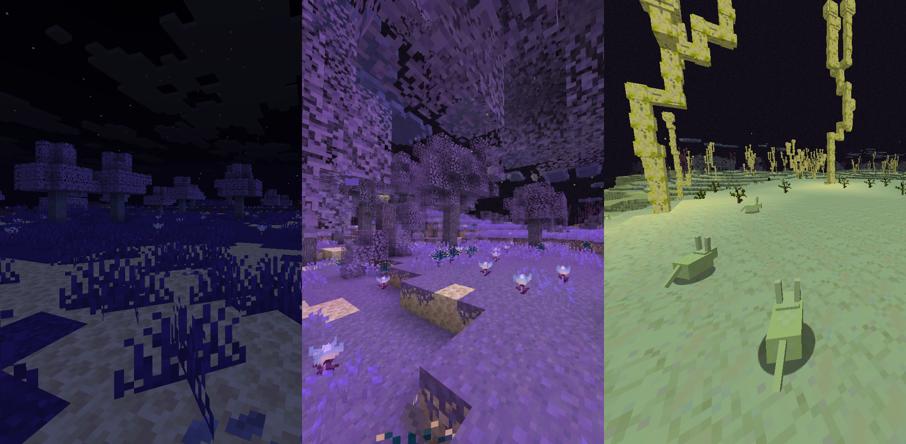
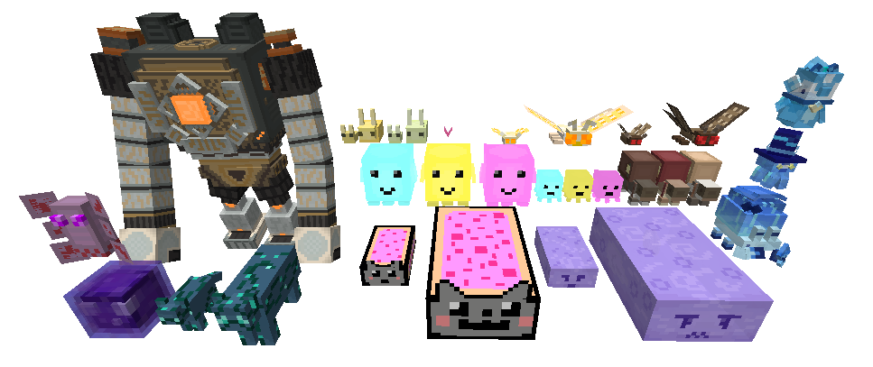
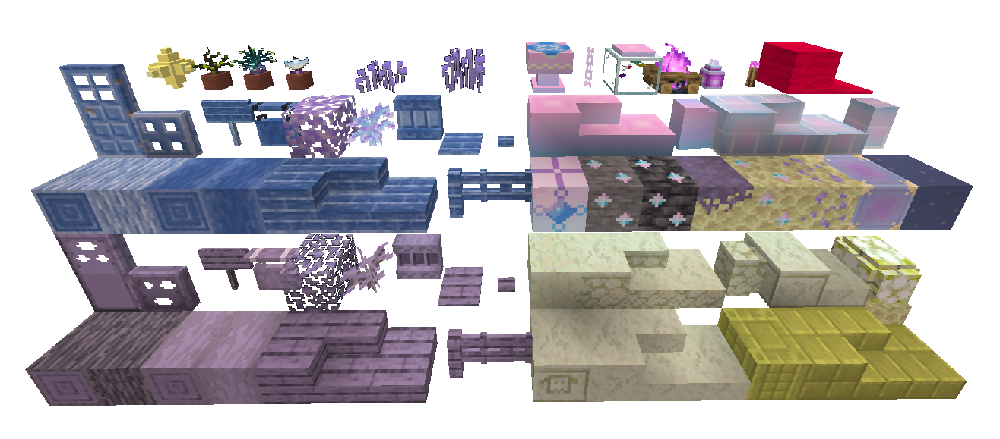
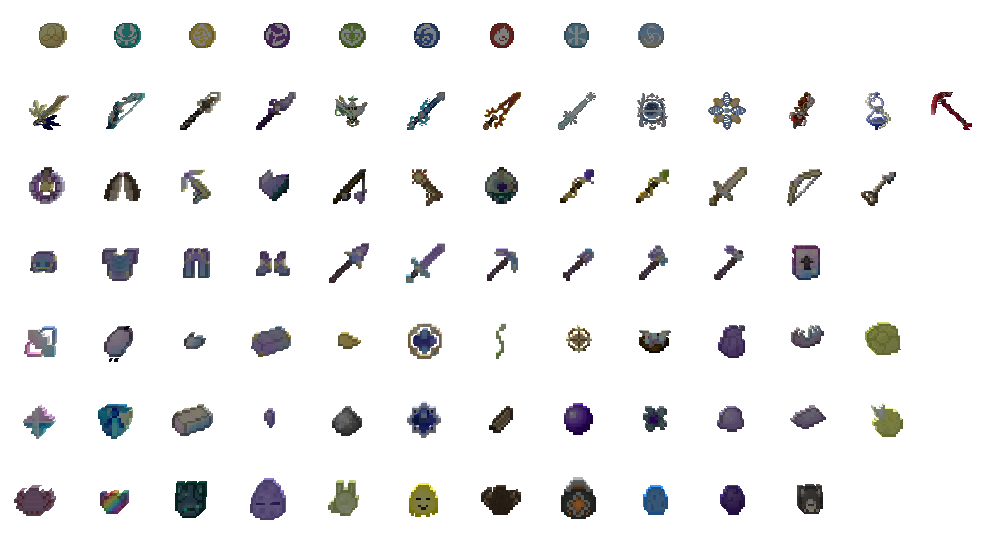
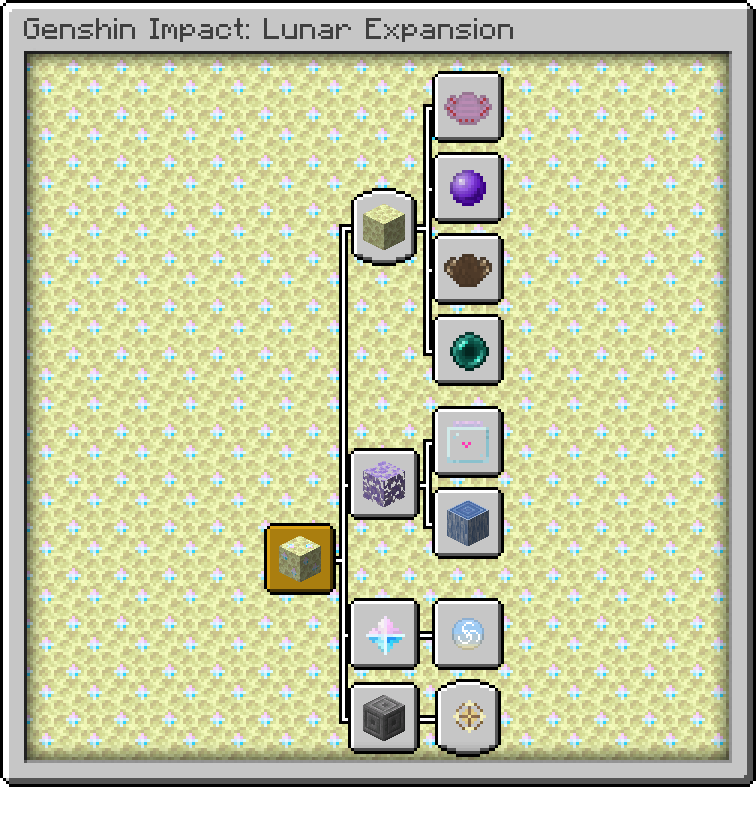

Genshin Impact:
Lunar Expansion
A Hoyoverse-inspired expansion for Minecraft that brings new materials, biomes, entities, utilities, weapons and custom abilities to your world.
CURRENT VERSION
1.0.0 Release
Fabric · Minecraft 26.1
Documentation
🚀 Getting StartedWhat to begin with your GILE adventure.
🏰 Ancient RuinsWhat is new in the Overworld and how to get to the Moon.
🦋 End ThresholdThe only new but still unique Overworld biome.
🌙 The MoonEvery biome & moon overall flora and fauna detail.
🌳 Ghostly ThicketsCute overgrown biiome, providing the only End wood type.
🌵 Moon DesertLeast habitated and emptier than overall End biome.
⚒️ Tools & UtilsWhat can help you to progress with the mod.
⭐ Wising MechanicsPrimogem, Wish Table & Sigils uses.
🔥 Elemental WeaponsWishing results - elemental weapons, ultimate goal.
⚔️ Legendary WeaponsWishing results - legendary weapons, ultimate goal.
What's in GILE?
- Expanded Dimensions — Ghostly Thickets, Moon Desert & End Threshold.
- Entities — Ruin Guard, Weasel Thiefs, Ender Fly, Hovering Ghost, Gloomy Lynx, Luminous, Moth, Jerboa, Void Slime.
- Decorative and Functional Blocks — Custom Ores, Wish Table functional block with a proper mechanic, as well as Pearlescent, Moon Sandstone, Ghostly Wood, Fluo, Moon Fire and Glitter block sets.
- Tools, Utilities, Materials and Weapons — Totally free to use and not only currency, a lot of survival-friendly tools and a highest tier equipment and tool set as well as some Genshin-inspired weapons with custom abilities for 8 elements, 4 legendary aspects and one ultimate primordial, God-tier one.
- Well-thought-out Progression — A lot of advancements that guide you through almost every mod feature as well as an alternative ENDing way - teleport yourself to The Moon using the End Compass and you have everything you need there!




